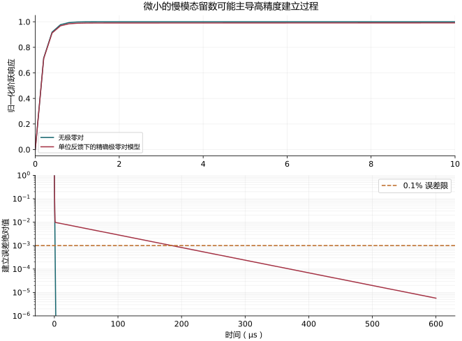

极零双重项与建立过程：必须保留留数和初始条件
对应：0265。
没有极零对的单位增益闭环
若主环路可近似开环积分器 A(s)=ωu/s，单位负反馈：
H(s)=1+AA=s+ωuωu.
单位阶跃的输出与误差：
y(t)=1−e−ωut,e(t)=e−ωut.
τu=ωu1=2πGBW1,tϵ=τuln(1/ϵ).
ϵ=0.001 时 t0.1%=6.90776τu，直接重现正文。
指定带极零对的开环模型
为了使结论可重现，而不是只从波特图猜时间式，明定
A(s)=sωus+ps+z,p,z>0.
高频仍有相同的 ωu/s 渐近线。闭环：
H(s)=s2+(p+ωu)s+ωuzωu(s+z).
若二次分母有两个实根，写成 (s+λf)(s+λs)，其中
λf,s=2p+ωu±(p+ωu)2−4ωuz.
阶跃误差的 Laplace 式：
E(s)=s1−H(s)=(s+λf)(s+λs)s+p.
部分分式系数：
As=λf−λsp−λs,Af=λf−λsλf−p,Af+As=1.
所以模型内精确的阶跃响应是
y(t)=1−Afe−λft−Ase−λst.
这在 t=0 精确为 0，且 t→∞ 为 1。
如何得到教材的小留数慢尾巴
若 p,z≪ωu，并且 p,z 接近：
λf≃ωu+p−z,λs≃z,As≃ωup−z.
定义有号 Δf=(p−z)/(2π)，可得
y(t)≃1−(1−δ)e−t/τu−δe−t/τpz,δ=GBWΔf,τpz≃1/z.
教材把快项系数再近似成 1，成为
1−e−t/τu−δe−t/τpz。
这一式在 t=0 会给 −δ，所以只能作小留数／晚时间近似，不能当完整阶跃精确解。
尾巴符号不是固定的。 在此明定模型中，p>z 时 As>0，输出从下方慢慢靠近终值；p<z 时可从上方靠近。原图若只标双重项「宽度」而不定义 p,z 的先后，不足以唯一决定时间曲线。
建立过程为何变慢
在快项衰减后，若 ∣As∣>ϵ：
tϵ≃λs1lnϵ∣As∣.
更保守的充分条件是分别要求
∣Af∣e−λft≤ϵ/2,∣As∣e−λst≤ϵ/2.
如果 ∣As∣≤ϵ，则慢尾巴从一开始就小于误差容限，不必机械地宣称所有极零对都会毁掉建立过程。
必要近似与数值图
| 步骤 |
条件 |
失效情况 |
| 开环 ωu/s |
穿越附近由主极点控制 |
多极点、前馈 |
| 两个实指数 |
判别式非负且极点稳定 |
复数根须改用阻尼振荡 |
| λs≃z |
p,z≪ωu |
极零对靠近交越 |
| As≃(p−z)/ωu |
小间距、低频极零对 |
大间距 |
| 只保留慢尾巴 |
快项已小且 ∣As∣>ϵ |
短时间与宽容限 |

不用 SFG：本节要解释的是极点留数与时间响应，部分分式比增添图节点直接。程序检查初值、终值、部分分式以及 0.1% 建立过程。
例图参数：ωu/(2π)=1 MHz、p/(2π)=12 kHz、z/(2π)=2 kHz。精确慢速留数约 0.00994；此例达到 0.1% 误差约需 184.7 µs，没有极零对的单极点模型约需 1.10 µs。数值依上述模型计算。
来源对照
| 幻灯片 |
PDF 页 |
书本页 |
讲解所在 PDF 页 |
| 0265 |
83 |
84 |
83 |
Spectre 仿真结果
本推导组的代表模型已完成 Spectre 验证；覆盖范围以所列网表为准，未逐一搭建所有幻灯片电路。
线性 AC 0 · MOS 电路 0 · 极零 0 · 瞬态 3：所列检查全部通过。
案例：baseline、tail、overshoot
查看本组波形、模型条件与 CSV → · 仿真 Markdown 解释
{kind=link}